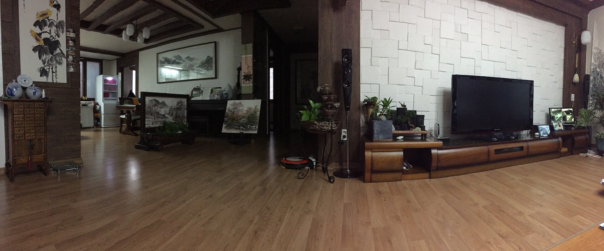
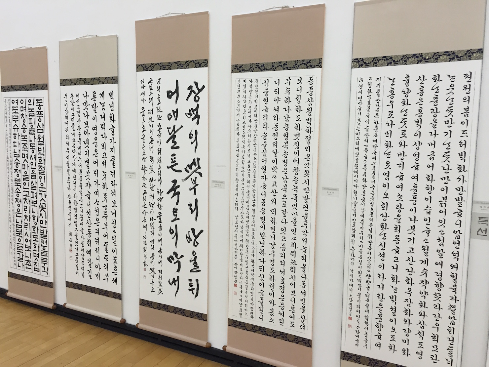
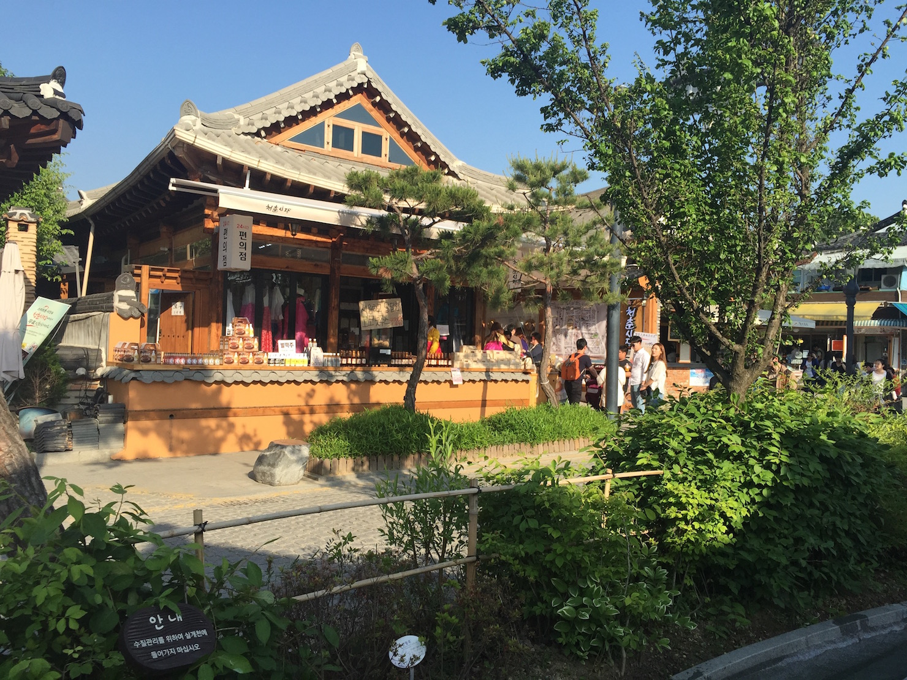
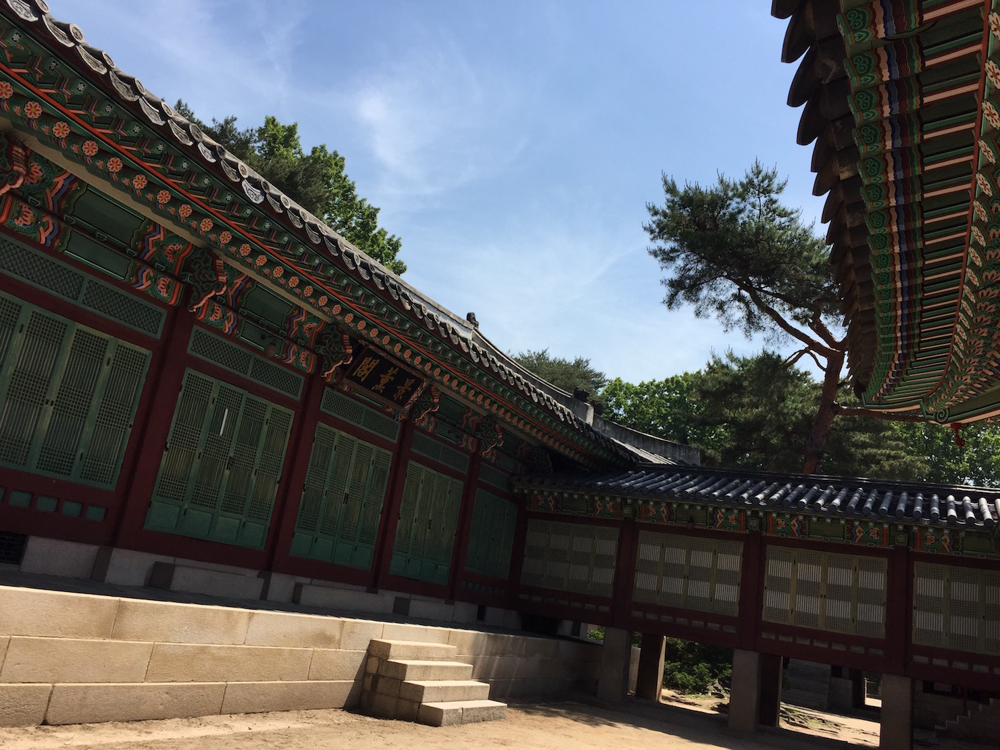
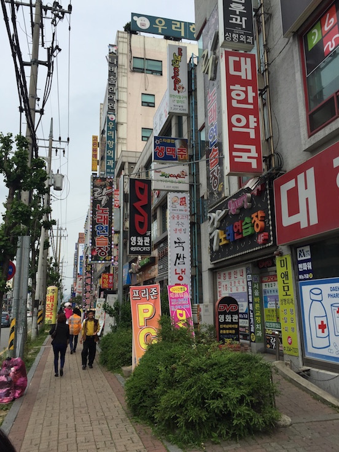

Back to index
First trip to Korea





Other Essays
From Joseon to Korea
Origins of the various names of Korea
King Sejong the Great
The most enlightened ruler in Korean history
Budae Jjigae
Seems so wrong, tastes so right!